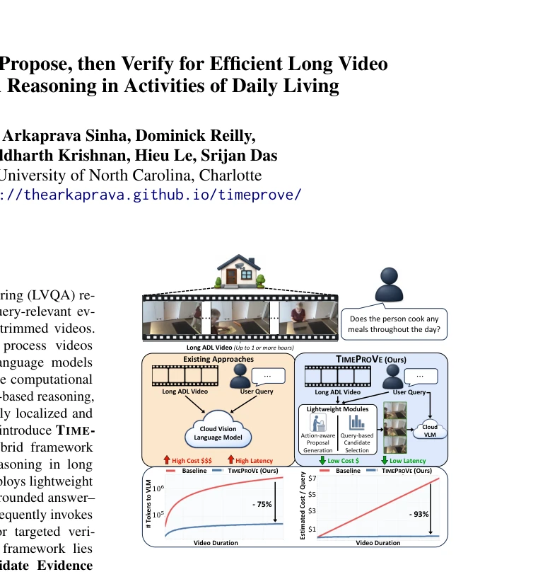
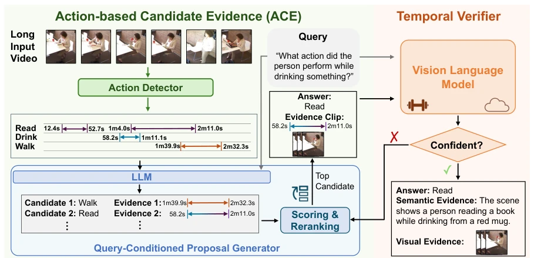
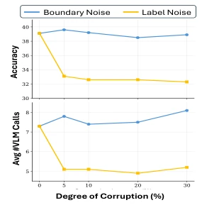
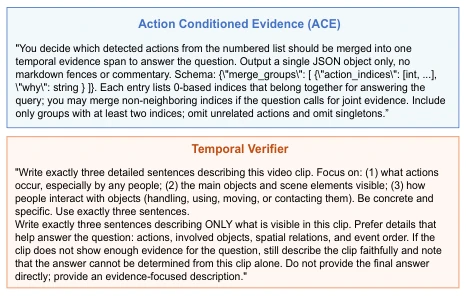
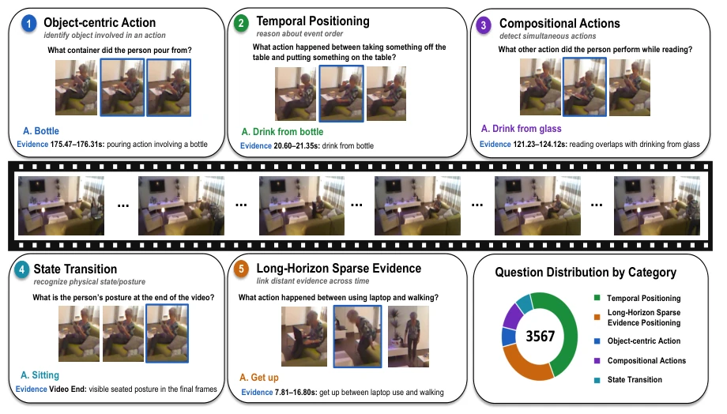
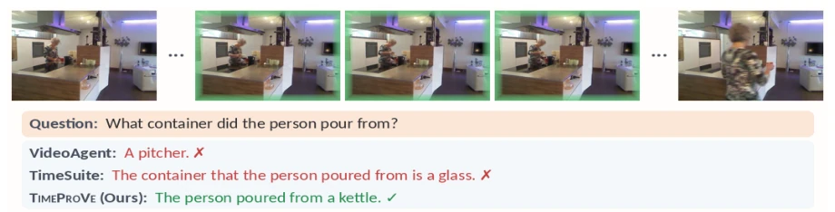
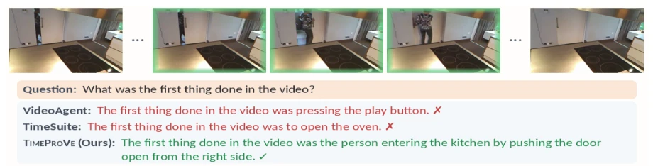
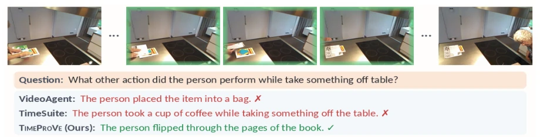
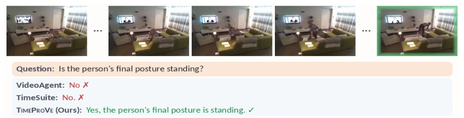
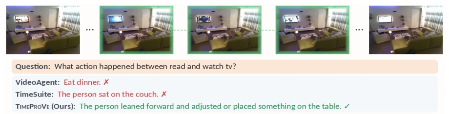

This paper essentially prescribes a remedy for the "costly" ailment of long-video VLMs, though the remedy still relies on VLMs for verification. The core logic of TIMEPROVE is "guess then verify": using a lightweight action detector to compress hour-long videos into timelines, employing small models to propose candidates, and finally having the large VLM make the final decision. Although it saves 93% of the cost, it essentially shifts the computational burden from "full visual encoding" to "action detection + small model inference". If the action detector misses key frames, even a smart large VLM cannot save the situation, as it only sees the cropped few-second clips. Additionally, while the OTB benchmark fills the gap in open-ended question answering, it relies on Toyota Smarthome data, so generalization to real-world scenarios remains questionable. However, reducing VLM calls by 75% while still improving performance is indeed a smarter cost-performance ratio compared to those "strongmen" who brute-force full videos.
研究动机Motivation
长视频问答（LVQA）在 ADL 场景下面临“信息稀疏”与“计算昂贵”的矛盾。小时级视频若直接输入 VLM，视觉 token 数轻松突破百万，导致推理成本不可承受（Comanici et al., 2025; Achiam et al., 2023）。现有方案要么像 LongVLM 那样压缩 token，容易丢失细粒度动作证据；要么依赖稀疏 caption，一旦关键动作未被文本化，下游推理就无法恢复（Pan et al., 2016; Chen et al., 2023）。此外，现有基准多局限于选择题，缺乏对时间定位能力的显式评估（Wang et al., 2025a; Wu et al., 2024）。TIMEPROVE 旨在解决这一痛点，通过“提议 - 验证”范式，在保留视觉证据的前提下，避免对全视频进行密集推理。
Long Video Question Answering (LVQA) faces the contradiction of "information sparsity" and "computational expense" in ADL scenarios. If hour-level videos are input directly into VLMs, the number of visual tokens easily exceeds a million, leading to unbearable inference costs (Comanici et al., 2025; Achiam et al., 2023). Existing solutions either compress tokens like LongVLM, easily losing fine-grained action evidence; or rely on sparse captions; once key actions are not textualized, downstream inference cannot recover (Pan et al., 2016; Chen et al., 2023). Furthermore, existing benchmarks are mostly limited to multiple-choice questions, lacking explicit evaluation of temporal localization capabilities (Wang et al., 2025a; Wu et al., 2024). TIMEPROVE aims to solve this pain point, through the "proposal-verification" paradigm, avoiding intensive inference on the full video while preserving visual evidence.

Figure 1: TIMEPROVE reduces long-video LVQA cost by proposing query-relevant evidence locally before VLM verification. Instead of processing the full video, it sends only short targeted clips to the cloud VLM.
The framework is divided into two stages: the ACE module and the Temporal Verifier. ACE first scans the full video in a single pass through a lightweight action detector (e.g., MS-Temba), generating an event timeline containing action labels and segments. Subsequently, the Query-conditioned Proposal Generator utilizes an edge LLM combined with user queries and the timeline to generate candidate answers and evidence windows. Evidence windows are divided into atomic windows (corresponding to single actions) and merged windows (corresponding to temporal combinations of multiple related actions). The key innovation lies in the local ranking mechanism, combining temporal compatibility (Rtmp), semantic relevance (Rsem), coverage (Rcov), and length penalty (Rlen) to calculate scores, filtering out segments most likely to contain evidence. Temporal compatibility adjusts window position preferences based on query intent (e.g., BEFORE, AFTER); semantic relevance rewards the strongest action match within the window; coverage measures whether the window contains query concepts; length penalty suppresses overly long segments. Finally, the Temporal Verifier calls the expensive VLM only on Top-K candidate segments for visual verification; if confidence is insufficient, it skips, thereby significantly reducing token consumption.

Figure 2: Overview of TIMEPROVE. ACE constructs a temporal action structure from the full video and proposes query-conditioned hypotheses. Only the selected short evidence clip is sent to the VLM for verification, avoiding full-video VLM inference.
Tested on the self-built OPENTSUBENCH (OTB) benchmark, containing 3567 QA pairs, with an average video duration of 21 minutes. Compared to SFT baselines (e.g., VideoLLaMA3) and Agentic frameworks (e.g., VideoAgent), TIMEPROVE improves overall accuracy by 7.3%. In terms of efficiency, VLM calls are reduced by 75%, and inference costs are reduced by 93%. Ablation experiments show that performance significantly improves after adding the action detector, verifying the importance of action timelines as priors. Additionally, on the CHARADES-STA temporal localization task, it achieves SOTA after combining with strong localization modules (e.g., Time-R1), proving the framework's generalization. But ablation also indicates that if the ranking module is removed, performance drops significantly, indicating that heuristic filtering is crucial.

Figure 4: Effect of boundary and label noise on Accu- racy and number of VLM calls.

Figure 6: Prompts for ACE and Temporal Verifier in TIMEPROVE
其他图片Other Figures

Figure 5: Overview of OPENTSUBENCH (OTB)

Figure 7: Qualitative Example for Object Centric Strata in OTB

Figure 8: Qualitative Example for Temporal Positioning Strata in OTB

Figure 9: Qualitative Example for Compositional Actions Strata in OTB

Figure 10: Qualitative Example for State Transition Strata in OTB

Figure 11: Qualitative Example for Long Horizon Sparse Evidence Strata in OTB